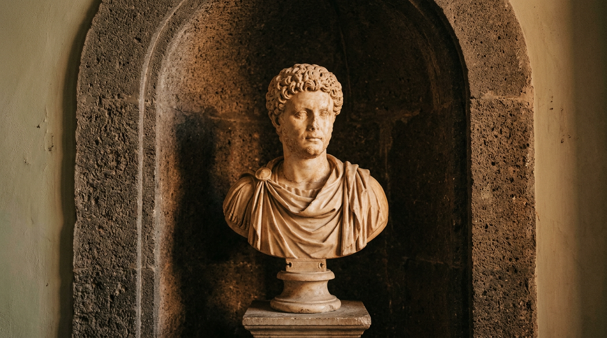

Domitian — the bald Nero of Castel Gandolfo.

Anyone strolling through the gardens of Villa Barberini is walking over the residence of an emperor Rome wanted to forget. Titus Flavius Domitianus built his favourite palace above Lake Albano. Ancient sources made him a tyrant; modern historians read him with more nuance.
The last of the Flavians
Born in Rome on 24 October 51, son of Vespasian and younger brother of Titus, Domitian reigned from 14 September 81 to 18 September 96, when he was murdered at 44 by officials of his own court (Wikipedia). He was the last emperor of the Flavian dynasty, and in fifteen years of rule he had around fifty buildings erected, restored or completed, a record second only to Augustus (Wikipedia).
The Albanum, the palace by the lake
The Alban Hills were already imperial land: under Augustus the concentration of estates had formed the Albanum Caesaris. Domitian added a new residential complex, probably entrusted to Rabirius, architect of his palace on the Palatine (Wikipedia). The villa spread over terraces about 500 metres long on the western rim of the crater; the palace itself stood where the church of San Francesco and the Propaganda Fide building are today. The middle terrace held the theatre, the avenue of nymphaea and the cryptoporticus, still visible for 120 metres in the garden of Villa Barberini (Wikipedia). We covered it in a dedicated article.
This is where the court really lived. Every year, Suetonius tells us, Domitian celebrated the Quinquatria in honour of Minerva at his Alban villa, with a college of priests, beast hunts, stage plays and contests in oratory and poetry (Suetonius, Domitian 4). On the Alban estate he showed off his archery: many saw him bring down a hundred animals, and strike some with two arrows set like horns (Suetonius, Domitian 19).
The bald Nero
The nickname comes from Juvenal. In his fourth satire the poet sets a grotesque council of state right here: a huge turbot caught off Ancona is brought to the emperor, and senators are hustled to the “Alban citadel” to decide how to cook it. It is the time when “Rome served a bald Nero” (Juvenal, Satire IV). Baldness was a sore point: Suetonius writes that Domitian took any joke about it as a personal insult, even though he wrote and dedicated to a friend a little book on the care of the hair (Suetonius, Domitian 18).
Suetonius has other portraits to offer. Early in his reign Domitian spent hours alone catching flies and stabbing them with a sharpened stylus, so that when someone asked whether anyone was with Caesar, Vibius Crispus replied: “Not even a fly” (Suetonius, Domitian 3). Anecdotes like this, written after his death, should be read as part of the hostile portrait the Senate wished to leave.
“Nothing is more pleasing than beauty, but nothing shorter-lived.”Domitian, On the Care of the Hair, in Suetonius
Fear and shining walls
The story of the mirror walls is true, but it needs telling precisely. Suetonius writes that, as the time of the danger he expected drew near, the emperor had the walls of the colonnades where he walked lined with phengite, a highly polished stone, so he could see what was happening behind his back (Suetonius, Domitian 14). No bedroom is mentioned, and the historian does not say in which residence. It was in his bedroom, however, that the conspirators reached him on 18 September 96: the first blow came from Stephanus, Domitilla's steward, with a dagger hidden in a fake bandage (Suetonius, Domitian 17).
A tyrant to reread
After his death the Senate condemned his memory: statues and coins melted down, arches torn down, his name erased from inscriptions (Wikipedia). The writers who described him, Tacitus, Pliny the Younger and Suetonius, all wrote after that condemnation. Since Brian W. Jones many scholars have seen him as a ruthless but efficient autocrat: rigorous administration, a fight against corruption, a currency never again so sound, alongside an increasingly oppressive relationship with the Senate (Wikipedia). His body was carried out on a pauper's bier; his nurse Phyllis cremated it at her villa on the Via Latina and secretly mixed the ashes with those of Julia, daughter of Titus, in the temple of the Flavian family (Suetonius, Domitian 17). The stones of the Albanum, in the Pontifical Villas, remain his most tangible testimony.